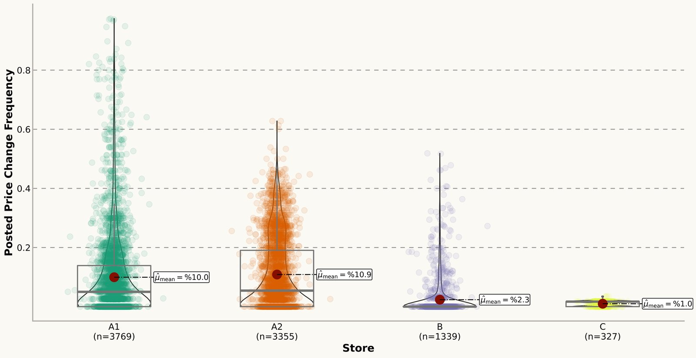

Projects
Data projects with open code and data: the question, what I built, and what the numbers say. Each one can be reproduced from its repository.
Nominal rigidities in online prices
MSc thesis, Universidad ICESI and Dalhousie University, 2025
How often, how much, and in which direction do online prices change in Colombia, and does the answer depend on the kind of business selling them?
- 820,000daily prices collected
- 14,425products tracked
- 4large online retailers
- 12months of scraping, Aug 2023 to Jul 2024
What I built
- A daily web-scraping pipeline in Python and Selenium for four online stores, anonymised as in the paper: two multichannel supermarkets (A1, A2), a price-comparison and delivery platform (B), and a hard-discount store (C).
- Cleaning, matching, and filtering of the product panel, plus product-to-CPI-group classification with a local Llama 3 model in R.
- Three price series per product: posted, regular (sales removed with the Nakamura and Steinsson filter) and reference (the Eichenbaum, Jaimovich and Rebelo modal price).
- Frequency, implied duration, size and direction of price changes, and Markov transition matrices between regular and temporary prices.
- A reproducible notebook pipeline that runs end to end on a bundled sample, with the full anonymised dataset archived on Zenodo.
What the data says
- Online prices are flexible: implied durations range from about 3 to 9 weeks, well below typical durations in physical stores.
- The business model matters. The supermarkets change posted prices on about 5% of days and their prices last about 4 weeks; the discount store and the platform change far less often.
- Price changes are large (17% to 24% on average), except at the discount store, where they average 1.6%.
- Sales end fast: a product on a temporary price returns to its reference price the next day with probability of about 0.75.

| Seller | Change frequency (median) | Implied duration (days) | Mean change size | Share of increases |
|---|---|---|---|---|
| A1Multichannel supermarket | 5.00% | 30.2 | 17.3% | 48% |
| A2Multichannel supermarket | 5.41% | 27.0 | 22.1% | 48% |
| BPrice comparison and delivery | 0.00% | 50.0 | 24.3% | 54% |
| CHard-discount store | 1.69% | 57.9 | 1.6% | 74% |
| All sellers | 3.35% | 40.1 | 19.7% | 51% |
Posted prices, main sample (19 April to 19 July 2024, all four sellers observed on the same days).
More on the way
I am publishing the code and data behind my earlier work one project at a time, cleaned, documented, and anonymised where needed. New projects will appear here and on GitHub.